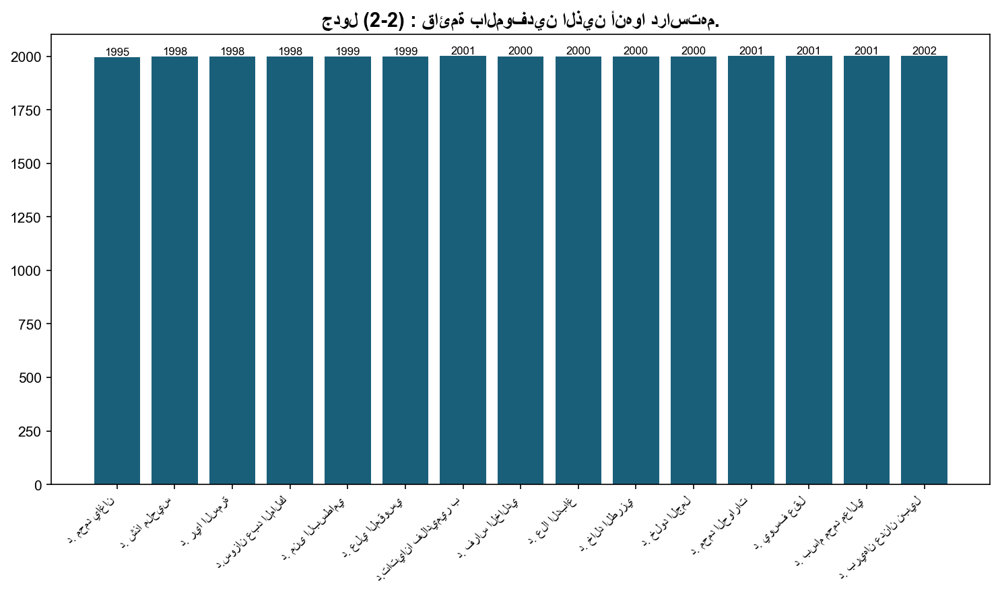
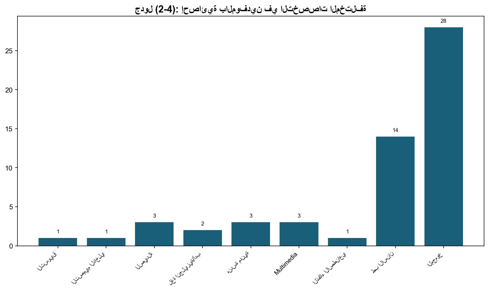
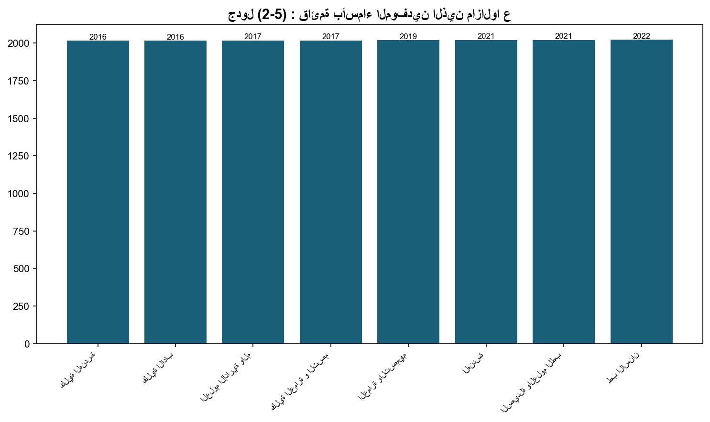

2.5: عدد الطلبة الموفدين
📝 7 فقرة
📋 4 جدول
📊 3/0 شكل
وقد رسمت الجامعة منذ تأسيسها سياسةً واضحةً للإيفاد، وطبقتها بكل شفافية، ونزاهة، ومصداقية؛ ضمانًا لتحقيق رؤية الجامعة، ورسالتها، وأهدافها، وتضع الخطط السنوية والخمسية على مستوى الأقسام الأكاديمية والكليات، وتربطها بالخطة الاستراتيجية، والتنفيذية، والموازنة المخصَّصة سنويًا، بما يؤكد الأهداف الآتية:
استقطاب أعضاء هيئة تدريسية للأقسام الأكاديمية، التي تفتقر إلى أعضاء هيئة تدريسية من الجنسية الأردنية.
توفير أعضاء هيئة تدريسية للأقسام الأكاديمية، التي يعمل فيها أعضاء هيئة تدريسية تجاوزت أعمارهم السبعين عامًا.
الحفاظ على مستوى أعضاء الهيئة التدريسية المعيَّنين؛ بإيفاد المتفوقين منهم إلى جامعات مرموقة.
الإيفاد في التخصصات التي تحتاج إليها الجامعة.
أوفدت الجامعة طالبة واحدة للعام 2023/2024 إضافة إلى من هم على مقاعد الدراسة:
وننوِّه بأنَّ موازنة الإيفاد للعام (2023/2024)، قد بلغت (470,000 دينارًا)، أي: ما يعادل (2%) من الموازنة العامة للجامعة.



جدول (2-2) : قائمة بالموفدين الذين أنهوا دراستهم.
📊 93 صف من البيانات
| الرقم | اسم الموفد | الجامعة الموفد إليها | التخصص | تاريخ بدء البعثة | تاريخ الحصول على الدرجة |
|---|---|---|---|---|---|
| د. محمد ياغان | جامعة تسكوبا/ اليابان | هندسة العمارة | 1995 | 1998 | |
| د. شذا ملحيس | جامعة أكسفورد بروكس/ المملكة المتحدة | التصميم الداخلي | 1998 | 2001 | |
| د. ريا السمرة | جامعة لندن/المملكة المتحدة | الصيدلانيات الصناعية | 1998 | 2003 | |
| د.سوزان عبد المالك | جامعة دندي/اسكتلندا/المملكة المتحدة | الأحياء الدقيقة الصيدلانية | 1998 | 2002 | |
| د. منى البسطامي | جامعة باث/المملكة المتحدة | التقنيات الطبية | 1999 | 2003 | |
| د. علي المقوسي | جامعة أكسفورد بروكس/المملكة المتحدة | علم الحاسوب | 1999 | 2003 | |
| د.تاتيانا فلاديمير بليخيا | جامعة أكسفورد بروكس/المملكة المتحدة | علم الحاسوب | 2001 | 2005 | |
| د. فراس الخالدي | جامعة هيدرزفيلد/المملكة المتحدة | نظم المعلومات الإدارية | 2000 | 2003 | |
| د. علا الدباغ | جامعة أدنبرة/المملكة المتحدة | الترجمة واللغويات | 2000 | 2003 | |
| د. خالد الطرزي | جامعة شفيلد/المملكة المتحدة | تطبيقات الحاسوب | 2000 | 2003 | |
| د. خلود الجمل | جامعة لندن/المملكة المتحدة | العلوم الصيدلانية | 2000 | 2003 | |
| د. محمد الحوارات | جامعة أكسفورد بروكس/المملكة المتحدة | علم الحاسوب | 2001 | 2007 | |
| د. يوسف عقل | جامعة كوفنتري/المملكة المتحدة | نظم المعلومات الإدارية | 2001 | 2004 | |
| د. بسام محمد معالي | ساوث هامبتون/المملكة المتحدة | المحاسبة | 2001 | 2005 | |
| د. بريهان عدنان نبيل | جامعة لفبرة/المملكة المتحدة | المحاسبة | 2002 | 2006 | |
| د. فيصل أسعد أبو الرب | جامعة غرب انجلترا بريستول/المملكة المتحدة | نظم المعلومات الإدارية | 2002 | 2006 | |
| د. بلال فايز عمر | جامعة هيل/المملكة المتحدة | المحاسبة | 2002 | 2007 | |
| د. عبد المنعم شلتوني | جامعة أستون/المملكة المتحدة | التسويق | 2002 | 2007 | |
| د. عبد الله أبو حمد | جامعة غرب أنجيليا/المملكة المتحدة | إدارة العمليات والإنتاج | 2002 | 2007 | |
| د. عبد الرؤوف اشتيوي | جامعة غريفث/أستراليا | شبكات الاتصال/نظم المعلومات الإدارية | 2003 | 2008 | |
| د. هيا أحمد غازي الغلاييني | جامعة غرب انجلترا بريستول/المملكة المتحدة | علم الحاسوب | 2004 | 2007 | |
| د. أسامة الحرفوشي | جامعة برادفورد/المملكة المتحدة | الأعمال والتجارة الإلكترونية | 2007 | 2009 | |
| د. إياد مازن الملاح | جامعة توبنجن/ ألمانيا | الكيمياء العضوية الصيدلانية | 2007 | 2009 | |
| د. رائد هناندة | جامعة لييز/إيطاليا | إدارة الأعمال | 2007 | 2010 | |
| د. سهم النوافلة | جامعة لييز/إيطاليا | نظم المعلومات الإدارية (الأعمال الإلكترونية) | 2007 | 2010 | |
| د. محمد فايز حمد | جامعة سارلاند/ألمانيا | الكيمياء الحيوية والبيولوجيا الجزيئية | 2007 | 2010 | |
| لبنى نمر العساف | جامعة كنغستون/المملكة المتحدة | التصميم الجرافيكي | 2008 | 2010 | |
| دانية سلامة الحياري | جامعة أتوا/كندا | علم الأدوية | 2008 | 2010 | |
| وسن زكريا حداد | جامعة برونيل/المملكة المتحدة | إذاعة وتلفزيون | 2009 | 2010 | |
| د. يوسف مجدلاوي | جامعة برادفورد/المملكة المتحدة | نظم المعلومات الإدارية | 2006 | 2011 | |
| إبراهيم بدران | جامعة هيرتفورد/المملكة المنحدة | تصميم جرافيكي | 2009 | 2011 | |
| د. يارا صبري | جامعة بنغامتهون/الولايات المتحدة الأمريكية | اللغة الإنجليزية/اللغويات والترجمة | 2008 | 2011 | |
| هنادة ماجد المومني | جامعة الشرق الأوسط/الأردن | إدارة الأعمال MBA | 2010 | 2011 | |
| د. نسرين رياض عبدالله | جامعة القاهرة | الصحافة والإعلام | 2009 | 2012 | |
| د. شيماء بدوي البردويل | جامعة نوتيغام ترنت/المملكة المتحدة | التصميم الجرافيكي | 2007 | 2012 | |
| زينة شعبان الشيخ | جامعة الإسكندرية/مصر | التصميم الجرافيكي | 2010 | 2013 | |
| روزا هاني نجيب نصراوين | جامعة الإسكندرية/مصر | التصميم الجرافيكي | 2010 | 2012 | |
| سوزان عطا فارس الزير | جامعة الإسكندرية/مصر | التصميم الداخلي | 2010 | 2013 | |
| فاتن يوسف النشاش | جامعة الإسكندرية/مصر | التصميم الداخلي | 2010 | 2013 | |
| د. هبة عدي شاكر الشاكر | جامعة إمبريال/المملكة المتحدة | العلوم الصيدلانية | 2010 | 2013 | |
| د. طارق زكي مصطفى الريماوي | جامعة لفبرة/المملكة المتحدة | التصميم الجرافيكي | 2010 | 2014 | |
| د. إبراهيم النواس | جامعة ريدينق/المملكة المتحدة | التسويق | 2010 | 2013 | |
| دينا السعدي | Brighton University/ المملكة المتحدة | العمارة | 2012 | 2013 | |
| ياسمين السعودي | Brighton University/ المملكة المتحدة | العمارة | 2012 | 2013 | |
| د. مي يعقوب أديب النشاشيبي | جامعة برادفورد/المملكة المتحدة | علم الحاسوب | 2009 | 2014 | |
| د.أمل عبدالله الشناق | جامعة سالفورد/المملكة المتحدة | اللغة الإنجليزية/ الترجمة | 2010 | 2014 | |
| د. محمد عواد الشناق | جامعة سالفورد/المملكة المتحدة | اللغة الإنجليزية/ الترجمة | 2010 | 2014 | |
| ابتسام الحوتري | جامعة الإسكندرية/مصر | ماجستير تصميم داخلي | 2011 | 2014 | |
| علاء الزعبي | جامعة الإسكندرية/مصر | ماجستير تصميم داخلي | 2011 | 2014 | |
| سائد ماجد زيغان | Huddersfield University/ UK | دكتوراه إدارة العمليات والإنتاج | 2012 | 2016 | |
| سعيد الحسيني | جامعة الإسكندرية/ مصر | ماجستير التصميم الجرافيكي | 2012 | 2016 | |
| إبراهيم يوسف | University of Coventry/ UK | دكتوراه العلوم المالية والمصرفية | 2012 | 2016 | |
| ظريفة الخفش | الاتحاد الأوروبي (Seville University)-Spain | ماجستير هندسة البرمجيات | 2014 | 2016 | |
| عصام شحادة | Gloucestershire University / UK | دكتوراه المحاسبة | 2011 | 2017 | |
| دانا الشويات | Gloucestershire University/ UK | دكتوراه إدارة الأعمال | 2013 | 2017 | |
| هشام عبابنة | University of Pittsburg-USA | دكتوراه حقوق | 2014 | 2018 | |
| هاني عبدالجواد محمد كايد | Salford University –UK | دكتوراه محاسبة | 2014 | 2018 | |
| تامر محمد عزيز قبرطاي | Huddersfield University-UK | دكتوراه إدارة الأعمال | 2014 | 2018 | |
| خليل عمر | الاتحاد الأوروبي (Carl von Ossietzky University Oldenburg)-Germany | دكتوراه علم الحاسوب | 2014 | 2018 | |
| ياسر عبدالله | Loughborough University-UK | دكتوراه علم حاسوب | 2014 | 2018 | |
| عامر الجوخدار | Cardiff University – UK | دكتوراه هندسة عمارة | 2015 | 2018 | |
| يزن شاهر المومني | The University of Texas at Arlington | دكتوراه هندسة مدنية | 2016 | 2018 | |
| الاء الدجاني | جامعة البترا | ماجستير صيدلة | 2016 | 2018 | |
| رشا الأحمد | جامعة اليرموك | ماجستير اعلام | 2016 | 2018 | |
| أسعد البسطامي | University of Manchester-UK | دكتوراه هندسة مدنية | 2014 | 2019 | |
| عبدالرحمن الناطور | University of Nottingham-UK | دكتوراه محاسبة | 2014 | 2019 | |
| محمد الناطور | University of Nottingham-UK | دكتوراه صيدلة | 2015 | 2019 | |
| ضحى الصمادي | University of North Texas-USA | دكتوراه نظم معلومات حاسوبية | 2015 | 2019 | |
| ملاك جابر | University of Nottingham-UK | دكتوراه صيدلة | 2015 | 2019 | |
| بيان الخوجا | Bath University –UK | دكتوراه صيدلة | 2015 | 2019 | |
| محمد الحيلوان | Queen Mary’s University | دكتوراه Linguistics | 2015 | 2019 | |
| نور الساحوري | Queens Belfast –UK | دكتوراه تغذية | 2015 | 2019 | |
| اية الكيلاني | Queens Belfast –UK | دكتوراه تغذية | 2016 | 2019 | |
| لما ابوحسان | Cardiff University/UK | دكتوراه عماره | 2015 | 2019 | |
| آية صبيح مسمار | Sheffield University /UK | دكتوراه هندسة عمارة | 2015 | 2020 | |
| عبير القيسي | University of Hertfordshire- UK | دكتوراه قانون | 2015 | 2020 | |
| عمرو ياغي | University of Hertfordshire- UK | دكتوراه قانون | 2015 | 2020 | |
| سارة العكور | Chester University- UK | دكتوراه علاقات عامة | 2016 | 2020 | |
| هديل شقير | University of York | دكتوراه إذاعة وتلفزيون | 2017 | 2022 | |
| زينة الزعبي | Bournemouth University – UK | دكتوراه اعلام | 2016 | 2022 | |
| محمد الجنيدي | Angelia Ruskin University –UK | ماجستير ودكتوراه ادارة الاعمال | 2015 | 2022 | |
| لبنى الكساسبة | Nice Sophia Antipolis- France | دكتوراه لغة فرنسية | 2015 | 2023 | |
| اية عبدالرحيم | Chester University-UK | دكتوراه اعلام | 2015 | 2023 | |
| اسامة منير نعيم | University of Manchester-UK | دكتوراه تصميم داخلي | 2017 | 2024 | |
| سلام مرعي | University of Edinburgh | ماجستير ودكتوراه Landscape Design | 2017 | 2024 | |
| دانية الحياري | University of Bradford – UK | دكتوراه صيدلة | 2019 | 2023 | |
| الاء القطيشات | University of Portsmouth – UK | دكتوراه لغة انجليزية –Linguistic | 2020 | 2023 | |
| نادين فياض | Brunel University -UK | دكتوراه تصميم داخلي | 2020 | 2024 | |
| فاديا ملحم | North Carolina State Universit- USA | دكتوراه تغذية | 2021 | 2024 | |
| لين أسعد | Queens Belfast UK | دكتوراه صيدله | 2021 | 2024 | |
| محمد عرفه | Loughborough university- UK | دكتوراه امن معلومات | 2020 | 2024 | |
| عبدالكريم البنا | Loughborough university- UK | دكتوراه ذكاء اصطناعي | 2021 | 2024 | |
| تالا مراغه | British Columbia- Canada | دكتوراه طب الاسنان | 2022 | 2025 |
جدول (3-2): الإيفاد للعام الجامعي 2023/2024.
📊 1 صف من البيانات
| الرقم | اسم الموفد | الكلية | الجامعة الموفد إليها | التخصص |
|---|---|---|---|---|
| فرح شختور | طب الأسنان | جامعة العلوم والتكنولوجيا | دكتوراه طب أسنان Orthodontics |
جدول (2-4): إحصائية بالموفدين في التخصصات المختلفة، وما زالوا على مقاعد الدراسة.
📊 9 صف من البيانات
| التخصص | عدد الموفدين الذين مازالوا يدرسون |
|---|---|
| التسويق | 1 |
| التصميم الداخلي | 1 |
| الصيدلة | 3 |
| لغة انجليزية/أدب | 2 |
| هندسة مدنية | 3 |
| Multimedia | 3 |
| الذكاء الاصطناعي | 1 |
| طب الاسنان | 14 |
| المجموع | 28 |
جدول (2-5) : قائمة بأسماء الموفدين الذين مازالوا على مقاعد الدراسة، في التخصصات المختلفة.
📊 28 صف من البيانات
| الرقم | إسم الموفد | الكلية | الجامعة الموفد إليها | التخصص | تاريخ الإيفاد | توقع إنهاء الدكتوراه |
|---|---|---|---|---|---|---|
| زينة سفيان النابلسي | كلية الهندسة | University of Manchester-UK | ماجستير و دكتوراه هندسة مدنية | 2016 | 2025 | |
| ندى تيم | كلية الاداب | Indiana University of Pennsylvania-USA | دكتوراه أدب لغة انجليزية | 2016 | 2025 | |
| أحمد الزبيدي | كلية الهندسة | الجامعة الأردنية | ماجستير و دكتوراه هندسة مدنية | 2016 | 2025 | |
| محمود زكارنه | العلوم الإدارية والمالية | Kent University/UK | ودكتوراه تسويق | 2017 | 2025 | |
| مجد النجم | كلية العمارة و التصميم | University of Manchester-UK | دكتوراه تصميم داخلي | 2017 | 2025 | |
| جمان الهياجنة | العمارة والتصميم | Bournemouth University – UK | ماجستير ودكتوراه تحريك | 2019 | 2025 | |
| جود عفانة | العمارة والتصميم | Nottingham University – UK | ماجستير ودكتوراه تحريك | 2019 | 2025 | |
| قصي القواسمه | الهندسة | Melbourne University | دكتوراه هندسة مدنية | 2021 | 2025 | |
| محمد محادين | الصيدلة والعلوم الطبية | University of Strathclyde – UK | دكتوراه صيدلة | 2020 | 2025 | |
| الاء الدجاني | الصيدلة والعلوم الطبية | Albert University – Canada | دكتوراه صيدله | 2021 | 2025 | |
| هنادي الشاكر | الصيدلة والعلوم الطبية | Queens Belfast UK | دكتوراه صيدله | 2021 | 2025 | |
| مجد عبدالله | طب الاسنان | Queen Marry – University of London – UK | ماجستير ودكتوراه طب اسنان | 2022 | 2027 | |
| محمد التميمي | طب الاسنان | University of Toronto- Canada | دكتوراه طب الاسنان | 2022 | 2025 | |
| بيان غانم | طب الاسنان | University of Nottingham – UK | دكتوراه البيولوجيا الجزئية وعلم الخلية | 2022 | 2025 | |
| عبد الله الرحاحلة | طب الاسنان | Cardiff University – UK | ماجستير ودكتوراه طب اسنان | 2022 | 2025 | |
| زينة الحاج علي | طب الاسنان | Queen Marry – University of London – UK | ماجستير ودكتوراه طب اسنان | 2022 | 2025 | |
| نيبال الحنيطي | الاداب والعلوم | Harriot – Watt – UK | دكتوراه Linguistic لغويات | 2022 | 2025 | |
| يزن نصر الله | العمارة والتصميم | - Gold Smith University of London- UK | دكتوراه تحريك | 2022 | 2025 | |
| فرح شختور | طب الاسنان | جامعة العلوم والتكنولوجيا | ماجستير طب أسنان Orthodontics | 2022 | 2024 | |
| زيد الحنبلي | طب الاسنان | Kings College London, UK | دكتوراه طب الاسنان Prosthodontics | 2023 | 2026 | |
| دينا مسمار | طب الاسنان | University of Pennsylvania, USA | دكتوراه طب الاسنان Prosthodontics | 2023 | 2026 | |
| سخاء خضر | طب الاسنان | Kings College London, UK | دكتوراه معالجة لبية Endodontics | 2023 | 2026 | |
| نسرين اياد | طب الاسنان | Queens Belfast University, UK | ماجستير التشريح Anatomy | 2023 | 2024 | |
| نسرين اياد | طب الاسنان | Queens Belfast University, UK | دكتوراه التشريح Anatomy | 2024 | 2027 | |
| ديما عمايره | طب الاسنان | Justus Liebig University of Giessen, Germany | دكتوراه التشريح Anatomy | 2022 | 2026 | |
| هيا شوارب | طب الاسنان | Queen Marry – University of London – UK | دكتوراه طب فم Oral Medicine | 2023 | 2026 | |
| هديل المناصير | طب الاسنان | University of Exeter, UK | ماجستير ودكتوراه علم وظائف الأعضاء Physiology | 2023 | 2027 | |
| محمد نظمي | تكنولوجيا المعلومات | Brunel University London- UK | دكتوراه الذكاء الاصطناعي | 2023 | 2026 |